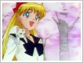

Magic » Desktop
Welcome to the wallpapers section of TVD. You'll find many Sailor Venus or Minako related wallpapers here to decorate your desktop with. Contributions are more than welcome, and so please submit if you have a good Venus/Minako wallpaper!
Made on: October 1st, 2006
800 x 600 || 1024 x 768
A very pastel and subtle wallpaper of Sailor V. The soft colors make desktop icons more visible. Thus this wallpaper is both aesthetic and functional.
Submitted on: Dec. 22th, 2002
800 x 600 || 1024 x 768
This wallpaper was kindly submitted by Crystal, thank you for this lovely wallpaper! Features Sailor Venus in a lightning red background. Fantastic wallpaper by her.
Made on: July 17th, 2002
800 x 600 || 1024 x 768
I like the colors on this one, it's a nice shade of red/pink and it has one of my favorite manga images of Venus on there. I used a couple of brush effects here, but they weren't really needed. XD I haven't experienced with brushes for quite a while, so it might be a bit sloppy.
Made on: July 16th, 2002
800 x 600 || 1024 x 768
The colors on this one are pretty soothing as well. I didn't do much to this one, just chose some colors, added a few effects and the bigger background image, along with some words and voila!^^ It's pretty simple, but I still like it. :)

Made on: July 16th, 2002
800 x 600 || 1024 x 768
I didn't do anything with this wallpaper XD It was originally a screenshot and it was relatively big, so I resized it to fit the resolutions and added words.^^ This one was very simple, but I liked the background and the image overall, so I thought it'll make a good wallpaper.